Euclidian Norm (L2 Norm)
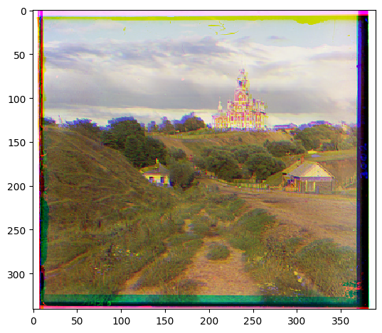
Displacement green: (1, -1)
Displacement red: (7, -1)
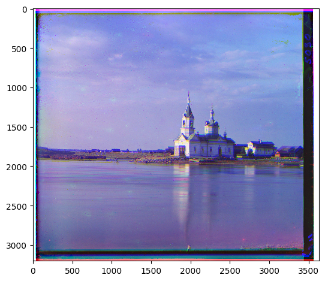
Displacement green: (0, -5)
Displacement red: (30, -12)
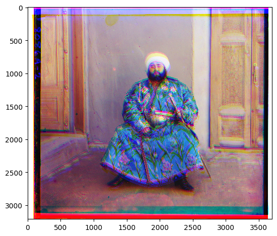
Displacement green: (-3, 7)
Displacement red: (30, 17)

Displacement green: (30, -3)
Displacement red: (30, -2)
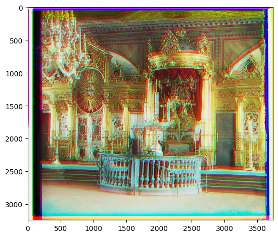
Displacement green: (30, 16)
Displacement red: (30, -6)

Displacement green: (30, -7)
Displacement red: (30, -18)

Displacement green: (30, -3)
Displacement red: (30, -8)

Displacement green: (-6, 0)
Displacement red: (9, 1)
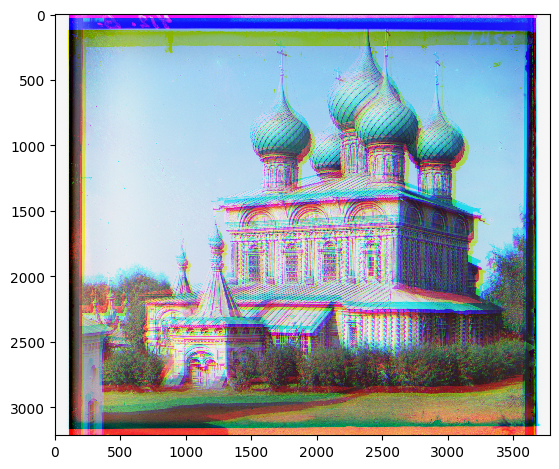
Displacement green: (30, 0)
Displacement red: (30, -1)

Displacement green: (30, -10)
Displacement red: (30, -20)
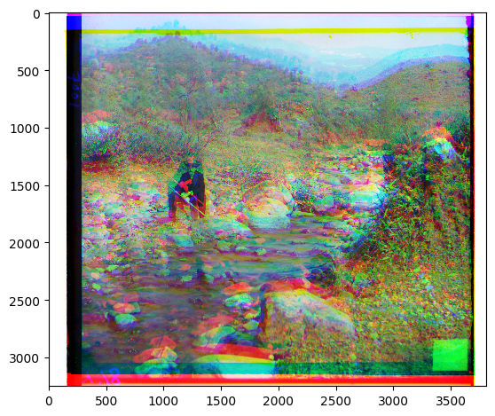
Displacement green: (30, -3)
Displacement red: (30, -6)
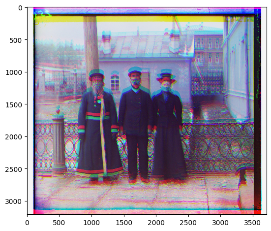
Displacement green: (30, 1)
Displacement red: (30, 3)
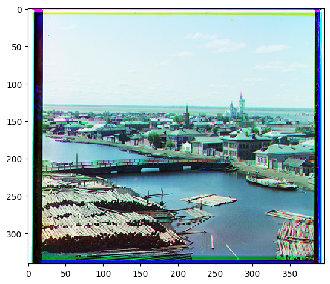
Displacement green: (3, 2)
Displacement red: (6, 3)

Displacement green: (30, -4)
Displacement red: (30, -1)
Normalized Cross-Correlation
Displacement green: (1, -1)
Displacement red: (7, -1)
Displacement green: (0, -5)
Displacement red: (30, -12)
Displacement green: (-3, 7)
Displacement red: (30, 17)
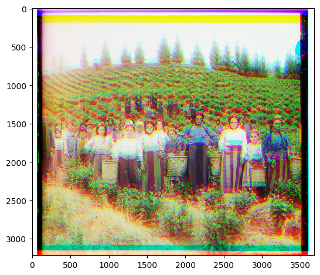
Displacement green: (30, -3)
Displacement red: (30, -2)
Displacement green: (-3, 7) Displacement red: (30, 17)
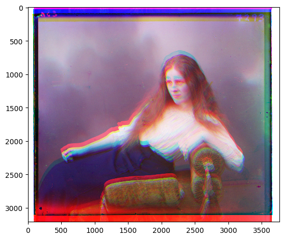
Displacement green: (30, 16)
Displacement red: (30, -6)
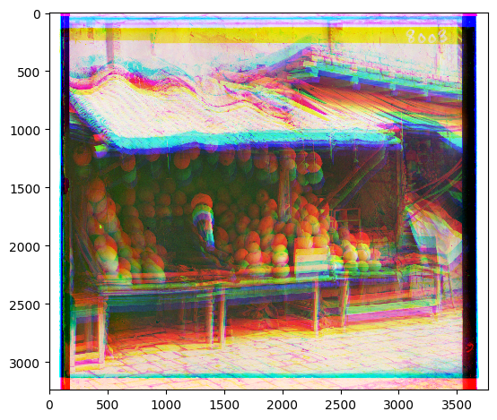
Displacement green: (30, -7)
Displacement red: (30, -18)
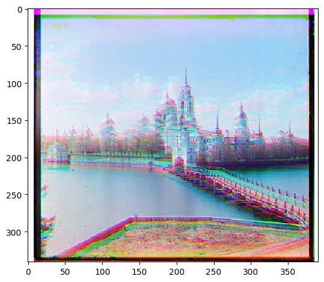
Displacement green: (-6, 0)
Displacement red: (9, 1)
Displacement green: (30, 0)
Displacement red: (30, -1)
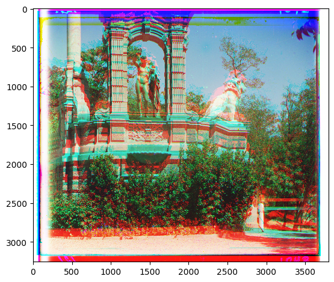
Displacement green: (30, -10)
Displacement red: (30, -20)

Displacement green: (30, -3)
Displacement red: (30, -6)

Displacement green: (30, 1)
Displacement red: (30, 3)

Displacement green: (3, 2)
Displacement red: (6, 3)
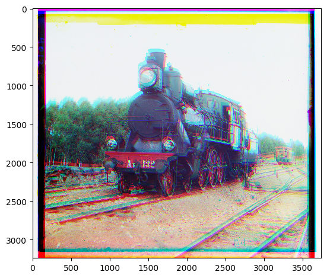
Displacement green: (30, -4)
Displacement red: (30, -1)
Image Pyramid
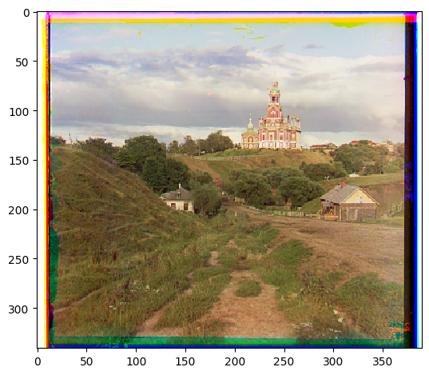
Displacement green: (5, 2)
Displacement red: (12, 3)
Displacement green: (25, 4)
Displacement red: (58, -4)
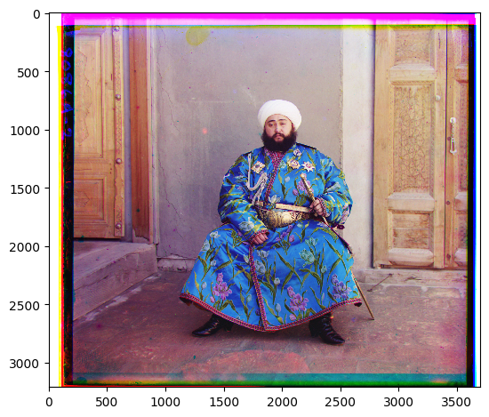
Displacement green: (49, 24)
Displacement red: (106, 41)
Displacement green: (55, 11)
Displacement red: (118, 11)
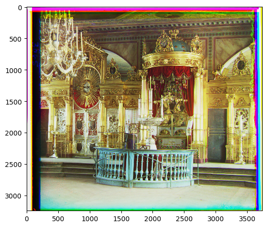
Displacement green: (39, 16)
Displacement red: (88, 23)
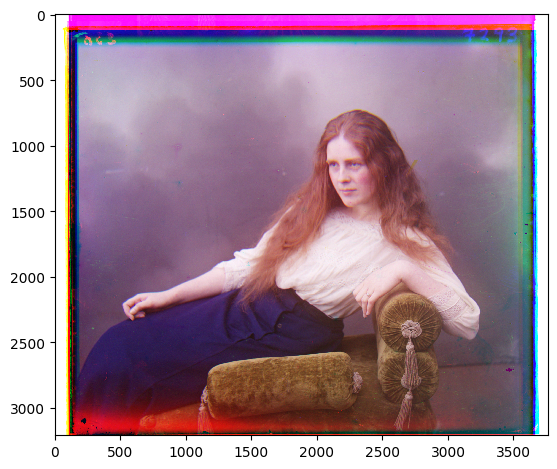
Displacement green: (57, 9)
Displacement red: (121, 13)
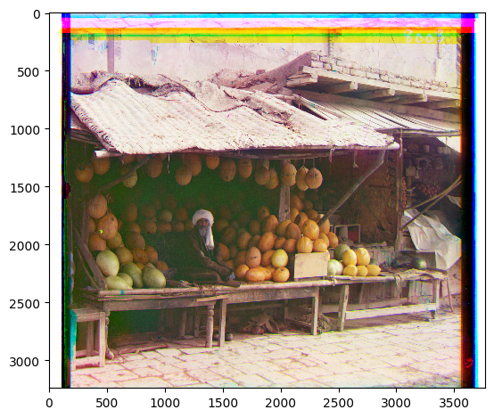
Displacement green: (79, 8)
Displacement red: (177, 14)
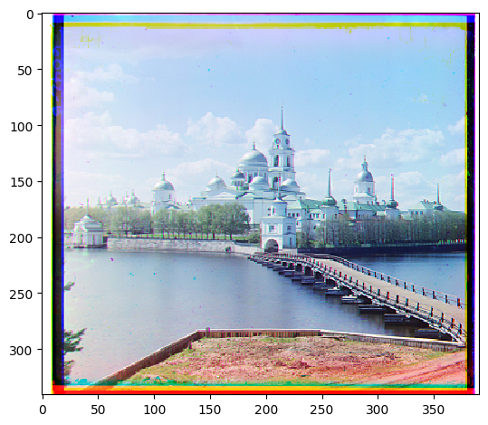
Displacement green: (-3, 2)
Displacement red: (3, 2)
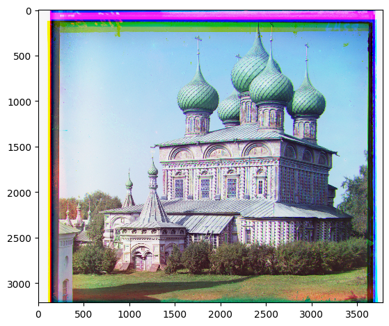
Displacement green: (52, 22)
Displacement red: (107, 34)
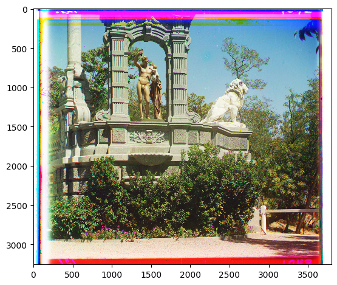
Displacement green: (32, -11)
Displacement red: (140, -27)
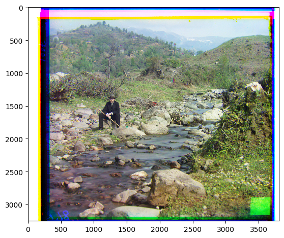
Displacement green: (77, 29)
Displacement red: (175, 37)
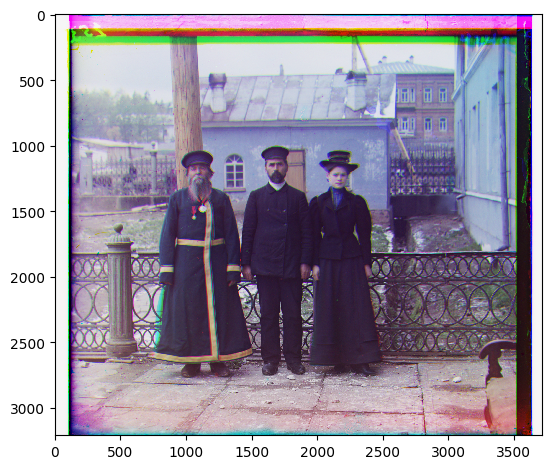
Displacement green: (56, 11)
Displacement red: (112, 7)

Displacement green: (3, 2)
Displacement red: (6, 3)
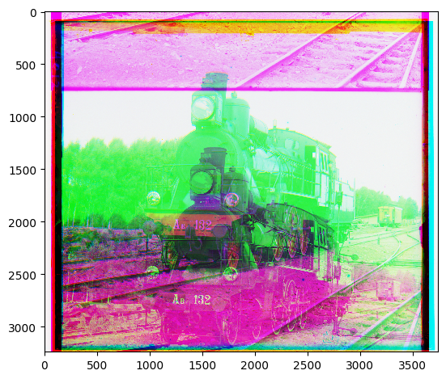
Displacement green: (755, -7)
Displacement red: (94, 32)
Edge Detection and Equalizing
Displacement green: (5, 2)
Displacement red: (12, 3)
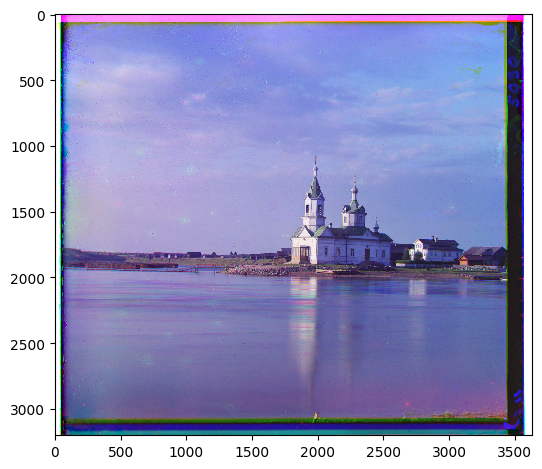
Displacement green: (24, 4)
Displacement red: (58, -4)
Displacement green: (49, 23)
Displacement red: (107, 41)
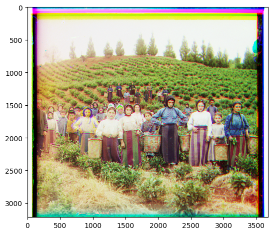
Displacement green: (61, 13)
Displacement red: (117, 10)
Displacement green: (38, 15)
Displacement red: (88, 22)
Displacement green: (57, 9)
Displacement red: (120, 13)
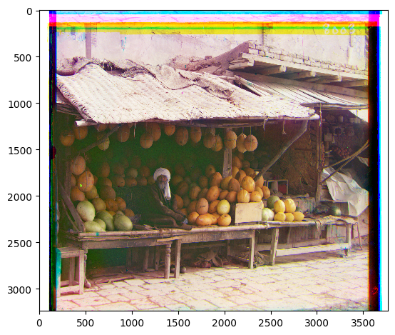
Displacement green: (79, 7)
Displacement red: (175, 11)
Displacement green: (-3, 2)
Displacement red: (3, 2)
Displacement green: (52, 24)
Displacement red: (109, 38)
Displacement green: (33, -11)
Displacement red: (140, -27)
Displacement green: (77, 29)
Displacement red: (175, 37)
Displacement green: (56, 11)
Displacement red: (105, 7)
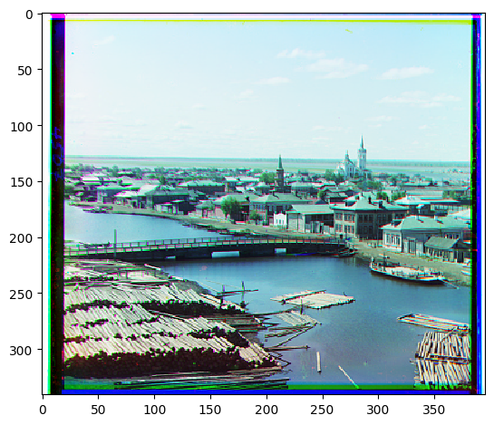
Displacement green: (3, 3)
Displacement red: (6, 3)
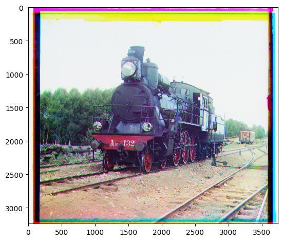
Displacement green: (50, 5)
Displacement red: (85, 29)